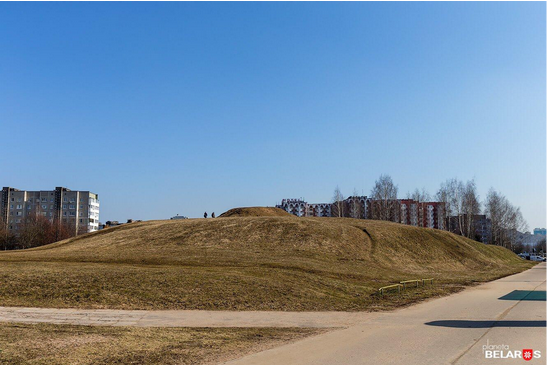
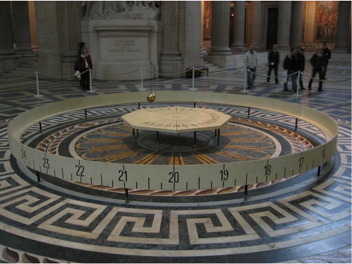

Какая из достопримечательностей находится не в московском районе?

Курганный могильник
Костел Святых Симеона и Елены
Церковь Серафима Саровского

Минский Свято-Духов кафедральный собор
Какой из представленных гербов принадлежит московскому району?
Правда, что в московском районе находится единственный в Беларуси маятник Фуко?

Правда, что на территории московского района присутствует кусочек Японии?
Правда, что на территории московского района находится старейший фонтан Минска, впервые запущенный в 1874 году?